数据管理基础
数据管理基础
第一章
1.概念
数据(Data)
- 是数据库中存储的基本对象
- 定义：描述事物的符号记录
- 数据的含义称为数据的语义，数据与其语义是不可分的。
数据库
- 定义：是长期储存在计算机内、有组织的、可共享的大量数据的集合
数据库管理系统（Database Management System ，简称 DBMS）
- 位于用户与操作系统之间的一层数据管理软件
- 是基础软件，是一个大型复杂的软件系统
数据库系统（Database System ，简称 DBS）
在计算机系统中引入数据库后的系统构成
构成
2.模型
数据模型：对现实世界数据特征的抽象，用以抽象、表示和处理
- 概念模型/信息模型：按用户的观点来对数据和信息建模，用于数据库设计
- 逻辑模型：按计算机系统的观点对数据建模，用于 DBMS 实现
- 物理模型：是对数据最底层的抽象，描述数据在系统内部的表示方式和存取方法。
- 数据模型的组成：数据结构、数据操作、数据的完整性约束条件
概念模型
- 实体(Entity)：客观存在并可相互区别的事物
- 属性(Attribute)：实体所具有的某一特性
- 码(Key)：唯一标识实体的属性集
- 实体型(Entity Type)：用实体名及其属性名集合来抽象和刻画同类实体称为实体型
- 实体集(Entity Set)：同一类型实体的集合称为实体集
- 联系(Relationship)：界中反映为实体(型)内部的联系和实体(型)之间的联系。
逻辑模型
- 关系模型
- 关系的完整性约束条件
- 实体完整性
- 参照完整性
- 用户定义的完整性
数据库系统结构
- 模式(Schema)：数据库逻辑结构和特征的描述，是型的描述，不涉及具体值，相对稳定
- 实例(Instance)：反映数据库某一时刻的状态，同一个模式可以有很多实例，随数据库中的数据的更新而变动
三级模式结构
- 模式(也称逻辑模式)
- 数据库中全体数据的逻辑结构和特征的描述
- 与数据的物理存储细节和硬件环境无关
- 数据的逻辑结构（数据项的名字、类型、取值范围等）
- 外模式(也称子模式或用户模式)
- 数据库用户(包括应用程序员和最终用户)使用的局部数据的逻辑结构和特征的描述
- 模式与外模式的关系：一对多
- 外模式通常是模式的子集，反映了不同的用户的应用需求、看待数据的方式、对数据保密的要求
- 每个用户只能看见和访问所对应的外模式中的数据
- 内模式(也称存储模式)
- 是数据物理结构和存储方式的描述，是数据在数据库内部的表示方式
- 一个数据库只有一个内模式
- 二级映象在数据库管理系统内部实现这三个抽象层次的联系和转换：外模式／模式映像、模式／内模式映像
- 模式(也称逻辑模式)
数据库系统人员
- 最终用户(交互式用户)
- 临时用户(用SQL语句访问DBMS的用户)
- 缺乏经验的用户(通过菜单访问DBMS的用户)
- 应用管理员(编写菜单程序的程序员)
- 数据库管理员(DBA):在数据库系统中，负责数据库的设计、建立、日常管理和运行维护的人员。
- 最终用户(交互式用户)
第二章
1.关系模型
| 关系数据库管理系统 | 关系模型 | 文件系统 |
|---|---|---|
| 表 | 关系 | 记录文件 |
| 列 | 属性 | 域 |
| 行 | 元组 | 记录 |
| 表头 | 模式 | 记录类型 |
关系规则
- 关系模型不允许有多值属性
- 只能基于内容存取行规则
- 行唯一性规则
- 实体完整性规则
域：一组具有相同数据类型的值的集合
笛卡尔积：
元组(Tuple)：笛卡尔积中每一个元素叫作一个n元组或简称元组，每个值叫做一个分量
基数：笛卡尔积的基数为每个子域基数的乘积
笛卡尔积的表示方法
笛卡尔积可表示为一张二维表
表中的每行对应一个元组，表中的每列对应一个域
关系：
- 关系也是一个二维表，表的每行对应一个元组，表的每列对应一个域
- 关系中不同列可以对应相同的域，为了加以区分，必须对每列起一个名字，称为属性
- 不同的列可出自同一个域，行列顺序无所谓
码
- 候选码：若关系中的某一属性组的值能唯一地标识一个元组，则称该属性组为候选码
- 主码：若一个关系有多个候选码，则选定其中一个为主码
- 主属性：候选码的诸属性称为主属性，不包含在任何侯选码中的属性称为非主属性或非码属性
- 任意两个元组的候选码不能相同
关系模式是型，关系是值，关系模式是对关系的描述
- 关系模式和关系往往笼统称为关系
2.关系的完整性
实体完整性
- 若属性A是基本关系R的主属性，则属性 A 不能取空值
- 空值就是不知道或不存在或无意义的值
关系间的引用
在关系模型中实体及实体间的联系都是用关系来描述的，自然存在着关系与关系间的引用
外码
引用的其他关系的码，引用其他关系码的关系叫参照关系，被引用的码对应的关系叫被参照关系
外码并不一定要与相应的主码同名
目标关系S的主码Ks和参照关系的外码F必须定义在同一个（或一组）域上
参照完整性
用户定义的完整性
- 针对某一具体关系数据库的约束条件，反映某一具体应用所涉及的数据必须满足的语义要求
3.关系代数
- 常用的关系操作
- 查询操作：选择、投影、连接、除、并、差、交、笛卡尔积
- 数据更新：插入、删除、修改
- 选择、投影、并、差、笛卡尔积是 5 种基本操作
- 交、并、差
- 具有相同的目n，即两个关系都有n个属性
- 相应的属性取自同一个域
- 笛卡尔积
- 相当于把元组当作集合元素的笛卡尔积
- 使用的符号
- t∈R： 元组t是关系R的一个元组
- t[Ai]：表示元组t中相应于属性Ai的一个分量
- 若A={Ai1, Ai2, … Aik}}，则 A 称为属性列或属性组。
- t[A]表示元组t在属性列A上诸分量的集合。
- A上加一横表示{A1，A2，An}中去掉 {Ai1，Ai2，Aik}后剩余的属性组。
- 象集Zx
- 给定一个关系R(X, Z)，X和Z为属性组
- 它表示R中属性组X上值为x的诸元组在Z上分量的集合
- 选择
- 例：σSage<20(student)，查找年龄小于20的学生
- 投影
- 从R中选择出若干属性列组成新的关系
- 投影之后不仅取消了原关系中的某些列 而且还可能取消某些元组，避免重复行
- 从列的角度运算
- 连接
- 从两个关系的笛卡尔积中选取属性间满足一定条件的元组
- 等值连接：θ 为 的连接运算称为等值连接
- 自然连接：一种特殊的等值连接
- 两个关系中进行比较的分量必须是相同的属性组
- 在结果中把重复的属性列去掉
- 从行的角度运算
- 悬浮元组
- 两个关系 R 和 S 在做自然连接时，关系 R 中某些元组有可能在S中不存在公共属性上值相等的元组，从而造成R中这些元组在操作时被舍弃了，这些被舍弃的元组称为悬浮元组
- 如果把悬浮元组也保存在结果关系中，而在其他属性上填空值 (Null)，就叫做外连接
- 左外连接：只保留左边关系R中的悬浮元组
- 右外连接：只保留右边关系S中的悬浮元组
- 除
- 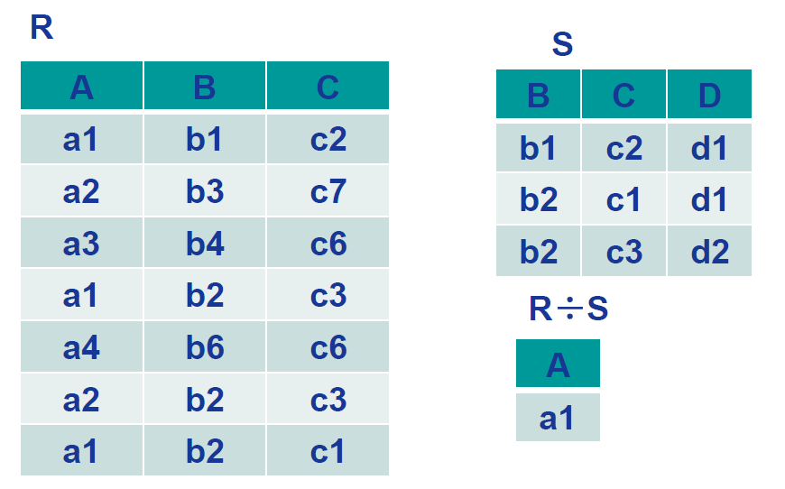
- 可以简记为只留下公共属性相同或包含的（能除尽）
第三章
1. SQL简述
- SQL特点
- 综合统一：可以独立完成数据库生命周期中的全部活动
- 高度非过程化：存取路径的选择以及 SQL 的操作过程由系统自动完成。
- 面向集合的操作方式：非关系数据模型采用面向记录操作方式，操作对象是一条记录，采用集合操作方式
- 以同一种语法结构提供两种使用方法：既是独立的语言，能够独立地用于联机交互的使用方式，又是嵌入式语言，能够嵌入到高级语言中
- 语言简洁，易学易用
- SQL与关系数据库三级模式
- 层次化的数据库对象命名机制
- 一个关系数据库管理系统的实例（ Instance ）中可以建立多个数据库
- 一个数据库中可以建立多个模式
- 一个模式下通常包括多个表、视图和索引等数据库对象
2. SQL数据定义
- SQL 的数据定义功能 :
- 模式定义
- 表定义
- 视图和索引的定义
- 定义模式
- 定义模式实际上定义了一个命名空间，在这个空间中可以定义该模式包含的数据库对象，例如基本表、视图、索引等。
- 在 CREATE SCHEMA 中可以接受 CREATE TABLE，CREATE VIEW 和 GRANT 子句。
- 删除模式
- DROP SCHEMA < 模式名 > <CASCADE|RESTRICT>
- CASCADE：级联
- 删除模式的同时把该模式中所有的数据库对象全部删除
- RESTRICT 限制
- 如果该模式中定义了下属的数据库对象（如表、视图等），则拒绝该删除语句的执行。
- 仅当该模式中没有任何下属的对象时才能执行。
- 例： DROP SCHEMA ZHANG CASCADE
3.基本语法
- 定义基本表
- 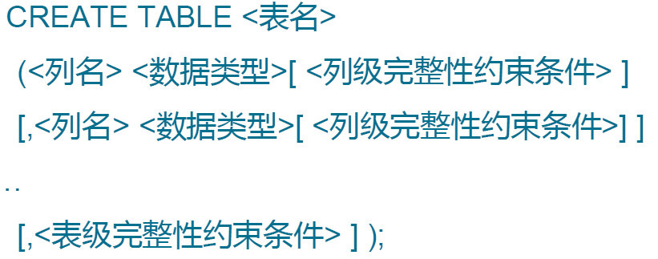
- <列级完整性约束条件 >：涉及相应属性列的完整性约束条件，例如某列为主码
- <表级完整性约束条件 >：涉及一个或多个属性列的完整性约束条件，例如有多列组合起来作为主码
- 如果完整性约束条件涉及到该表的多个属性列，则必须定义在表级上，否则列级和表级都可
- 数据类型
- 修改数据类型
- ADD 子句用于增加新列、新的列级完整性约束条件和新的表级完整性约束条件
- DROP COLUMN 子句用于删除表中的列
- DROP CONSTRAINT 子句用于删除指定的完整性约束条件
- ALTER COLUMN 子句用于修改原有的列定义，包括修改列名和数据类型
- 删除基本表
- DROP TABLE <表名> [RESTRICT | CASCADE]
- RESTRICT：欲删除的基本表不能被其他表的约束所引用
- CASCADE ：删除该表没有限制，在删除基本表的同时，相关的依赖对象一起删除
- 建立索引
- CREATE [UNIQUE] [INDEX] <索引名> ON <表名>(<列名><次序>, <列名><次序>···)
- 索引：可以建立在该表的一 列或多列上，各列名之间用逗号分隔
- 次序 指定索引值的排列次序。升序：ASC；降序：DESC。缺省值：ASC。
- UNIQUE：此索引的每一个索引值只对应唯一的数据记录
- CLUSTER：表示要建立的索引是聚簇索引
- 修改/删除索引
4.查询
基础部分
- 基本语法
- 查询经过计算的值
- SELECT * FROM [表名]：查询所有列
- SELECT 子句的目标列表达式不仅可以为表中的属性列，也可以是表达式，如2014-Sage
- LOWER()：表示转换成小写
- SELECT和列名之间默认为ALL，可使用DISTINCT去掉重复行
- 条件查询
- 比较大小：WHERE Sdept =‘ CS’；WHERE Sage < 20；
- 确定范围：[NOT] BETWEEN … AND
- 确定集合：IN <值表>, NOT IN <值表>，例如 WHERE Sdept IN ((‘CS’,’MA’,’IS’）
- 字符匹配
- 谓词：[NOT] LIKE ‘<匹配串>’ [ ESCAPE ‘换码字符‘ ]
- 匹配串 可以是一个完整的字符串，也可以含有通配符%(（)任意长度且长度可以为0的字符串)和 _ (任意单个字符)
- 涉及空值的查询：IS NULL 或 IS NOT NULL，IS不能用 ’=‘代替
- 多重条件查询：用AND和OR，且AND优先级更高，可用括号改变优先级
- 对查询结果排序
- ORDER BY 子句
- 可以按一个或多个属性列排序
- 升序：ASC；降序：DESC；缺省值为升序
- 对于空值，排序时显示的次序由具体系统实现来决定

- ORDER BY 子句
- 聚集函数
- 统计元组个数：COUNT(*)
- 统计一列中值的个数：COUNT( [DISTINCT | ALL] <列名>)
- 计算一列值的总和（此列必须为数值型）：SUM( [DISTINCT | ALL] <列名>)
- 计算一列值的平均值（此列必须为数值型）：AVG( [DISTINCT | ALL] <列名>)
- 求一列中的最大值和最小值：MAX( [DISTINCT | ALL] <列名>) MIN( [DISTINCT | ALL] <列名>)
- 对查询结果分组
- 如果未对查询结果分组，聚集函数将作用于整个查询结果
- 对查询结果分组后，聚集函数将分别作用于每个组
- 按指定的一列或多列值分组，值相等的为一组
连接查询
连接
连接查询：同时涉及两个以上的表的查询
连接条件或连接谓词：用来连接两个表的条件
连接字段：连接谓词中的列名称，连接条件中的各连接字段类型必须是可比的，但名字不
必相同
连接操作执行过程
- 嵌套循环法：首先在表1中找到第一个元组，然后从头开始扫描表 2 ，逐一查找满足连接件的元
组，找到后拼接起来形成结果表中一个元组。 - 排序合并法（常用于=连接）：先按连接属性进行排序，当遇到表2中第一条大于表1连接字段值的元组时，对表2的查询不再继续
- 索引连接：对表2按连接字段建立索引，对表1中的每个元组，依次根据其连接字段值查询表2的索引，从中找到满足条件的元组后将表1中的第一个元组与该元组拼接起来，形成结果表中一个元组
- 嵌套循环法：首先在表1中找到第一个元组，然后从头开始扫描表 2 ，逐一查找满足连接件的元
同时进行选择和连接
- 过程：先选择，再连接
自身连接
一个表与其自己进行连接
需要给表起别名以示区别
由于所有属性名都是同名属性，因此必须使用别名前缀
外连接
多表连接：用AND组合连接条件
嵌套
定义
- 一个 SELECT FROM WHERE 语句称为一个查询块
- 将一个查询块嵌套在另一个查询块的WHERE子句或HAVING短语的条件中的查询称为嵌套查询
- 上层的查询块称为外层查询或父查询，下层查询块称为内层查询或子查询
- 允许多层嵌套查询
相关子查询
- 不相关子查询：子查询的查询条件不依赖于父查询
- 相关子查询：子查询的查询条件依赖于父查询
- 首先取外层查询中表的第一个元组，根据它与内层查询相关的属性值处理内层查询，若 WHERE 子句返回值为真，则取此元组放入结果表
- 然后再取外层表的下一个元组，重复这一过程，直至外层表全部检查完为止
嵌套查询的转化
带有IN谓词的：可用连接查询转化
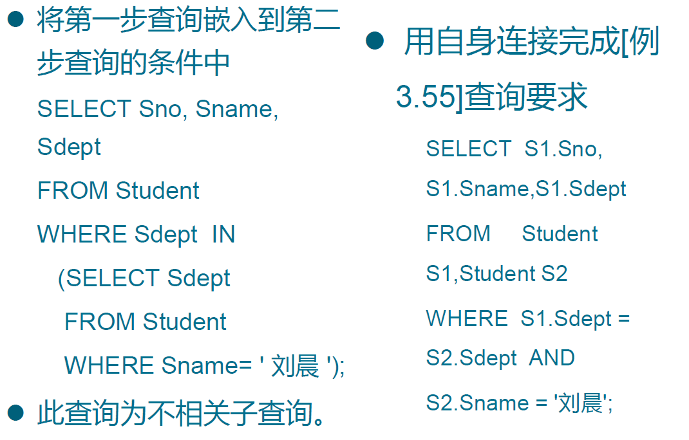带有比较运算符的

带有ANY、SOME或 ALL谓词的子查询
带有EXISTS谓词的查询
- 带有 EXISTS 谓词的子查询不返回任何数据，只产生逻辑真值true或逻辑假值false
- 由 EXISTS 引出的子查询，其目标列表达式通常都用 * ，因为带EXISTS 的子查询只返回真值或假值，给出列名无实际意义
- 一些带 EXISTS 或 NOT EXISTS 谓词的子查询不能被其他形式的子查询等价替换
- 所有带 IN 谓词、比较运算符、 ANY 和 ALL 谓词的子查询都能用带 EXISTS 谓词的子查询等价替换
集合
- 并
- UNION：将多个查询结果合并起来时，系统自动去掉重复元组
- UNION ALL ：将多个查询结果合并起来时，保留重复元组
- 交
- INTERSECT：对多个查询结果求交集
- 差
- EXCEPT：对多个查询结果求差集
派生表
- 子查询不仅可以出现在 WHERE 子句中，还可以出现在 FROM子句中，这时子查询生成的临时派生表（ Derived Table ）成为主查询的查询对象
- 如果子查询中没有聚集函数，派生表可以不指定属性列，子查询 SELECT 子句后面的列名为其缺省属性。
5.插入
- 语法
- INTO子句中属性列的顺序可与表定义中的顺序不一致；若没有指定属性列，则表示要插入的是一条完整的元组，且属性列属性与表定义中的顺序一致；若指定部分属性列，则插入的元组在其余属性列上取空值
- VALUE子句提供的值必须与 INTO 子句匹配
- 插入子查询结果
- SELECT 子句目标列必须与 INTO 子句匹配
6.修改
- 语法
- 修改指定表中满足 WHERE 子句条件的元组
- SET 子句给出 表达式 的值用于取代相应的属性列
- 如果省略 WHERE 子句，表示要修改表中的所有元组
- 关系数据库管理系统在执行修改语句时会检查修改操作是否破坏表上已定义的完整性规则
7.删除
语法
- 删除指定表中满足 WHERE 子句条件的元组
- WHERE子句指定要删除的元组，缺省表示要删除表中的全部元组，表的定义仍在字典中
8.空值
- 空值的情形
- 有 NOT NULL 约束条件的不能取空值
- 加了 UNIQUE 限制的属性不能取空值
- 码属性不能取空值
- 空值的运算
- 判断一个属性的值是否为空值，用IS NULL或IS NOT NULL来表示
- 空值与另一个值（包括另一个空值）的算术运算的结果为空值
- 空值与另一个值（包括另一个空值）的比较运算的结果为 UNKNOWN
- 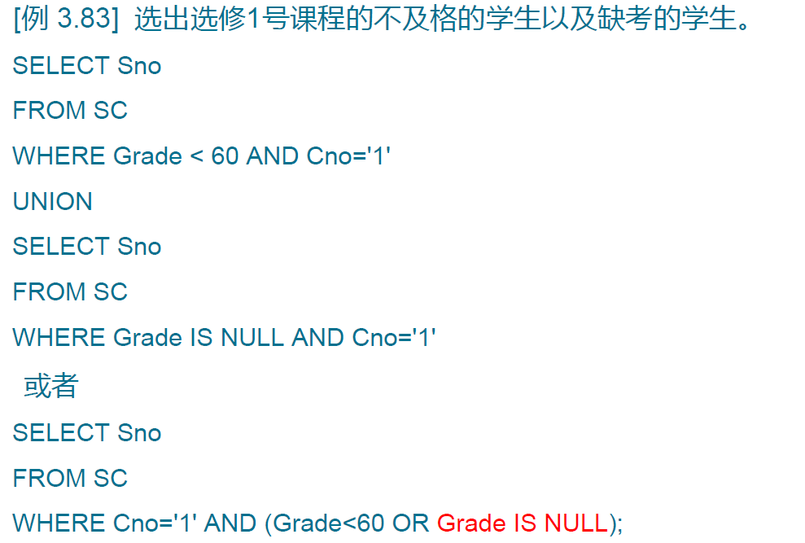
9.视图
特点
- 虚表，是从一个或几个基本表（或视图）导出的表
- 只存放视图的定义，不存放视图对应的数据
- 基表中的数据发生变化，从视图中查询出的数据也随之改变
定义视图
组成视图的属性列名：全部省略或全部指定
全部省略：由子查询中 SELECT 目标列中的诸字段组成
需要指定的情况：
关系数据库管理系统执行 CREATE VIEW 语句时只是把视图定义存入数据字典，并不执行其中的 SELECT 语句。（即不将视图作为表存储，与创建基本表对比）
视图可以作为子查询对象再次创建视图
删除视图
- DROP VIEW <视图名 > [CASCADE]
- 该语句从数据字典中删除指定的视图定义
- 如果该视图上还导出了其他视图，使用CASCADE 级联删除语句，把该视图和由它导出的视图一起删除
- 删除基表时，由该基表导出的所有视图定义都必须显式地使用 DROP VIEW 语句删除
查询视图
- 用户角度：查询视图与查询基本表相同
- 关系数据库管理系统实现视图查询的方法：视图消解法
- 有些情况下，视图消解法不能生成正确的查询
更新视图
- 允许对行列子集视图进行更新
- 对其他类型视图的更新不同系统有不同限制
- 一个不允许更新的视图上定义的视图也不允许更新
视图的作用
- 视图能够简化用户的操作
- 视图使用户能以多种角度看待同一数据
- 视图对重构数据库提供了一定程度的逻辑独立性
- 视图能够对机密数据提供安全保护
- 适当的利用视图可以更清晰的表达查询
第四章
1.数据库安全性
- 数据库安全性
- 数据库的安全性是指保护数据库以防止不合法使用所造成的数据泄露、更改或破坏
- 系统安全保护措施是否有效是数据库系统主要的性能指标之一
- 计算机系统的安全模型
- 计算机系统中，安全措施是一级一级层层设置
- 系统根据用户标识鉴定用户身份，合法用户才准许进入计算机系统
- 数据库管理系统还要进行存取控制，只允许用户执行合法操作
- 操作系统有自己的保护措施
- 数据以密码形式存储到数据库中
2.存取控制
概念
- 定义用户权限， 并将用户权限登记到数据字典中
- 合法权限检查
- 用户权限定义和合法权检查机制一起组成了数据库管理系统的存取控制子系统
自主存取控制
- C2 级
- 用户对不同的数据对象有不同的存取权限
- 不同的用户对同一对象也有不同的权限
- 用户还可将其拥有的存取权限转授给其他用户
- 通过 SQL 的 GRANT 语句和 REVOKE 语句实现
- 用户权限组成：数据库对象、操作类型
GRANT语句
- 语义：将对指定操作对象的指定操作权限授予指定的用户
- 发出 GRANT：数据库管理员、数据库对象创建者、拥有该权限的用户
- 按受权限的用户：一个或多个具体用户、PUBLIC（全体用户）
- WITH GRANT OPTION 子句：指定则可以再授予，没有指定则不能传播
REVOKE语句
创建用户
- CREATE USER 不是 SQL标准，各个系统的实现相差甚远
- 新创建的数据库用户有三种权限：CONNECT 、 RESOURCE 和 DBA
数据库角色
- 被命名的一组与数据库操作相关的权限
- 角色是权限的集合，可以为一组具有相同权限的用户创建一个角色
- 语法：CREATE ROLE <角色名>
- 给角色授权：GRANT <权限> [<权限>]…
ON <对象类型> 对象名
TO <角色> [<角色>]… - 只有角色的创建者和拥有ADMIN OPTION的角色可以revoke
强制存取控制 MAC
- 每一个数据对象被标以一定的密级，每一个用户也被授予某一个级别的许可证，对于任意一个对象，只有具有合法许可证的用户才可以存取
- 在强制存取控制中，数据库管理系统所管理的全部实体被分为主体和客体两大类
- 主体：系统中的活动实体，如数据库管理系统所管理的实际用户、代表用户的各进程
- 客体：系统中的被动实体，受主体操纵，如文件、基本表、索引、视图
- 对于主体和客体， DBMS 为它们每个实例（值）指派一个敏感度标记（ Label）
- 仅当主体的许可证级别大于或等于客体的密级时，该主体才能读取相应的客体；仅当主体的许可证级别小于或等于客体的密级时，该主体才能写相应的客体
3.审计
- 概念
- 启用一个专用的审计日志将用户对数据库的所有操作记录在上面
- 审计员利用审计日志 监控数据库中的各种行为 ，找出非法存取数据的人、时间和内容
- 审计事件
- 服务器事件：审计数据库服务器发生的事件
- 系统权限：对系统拥有的结构或模式对象进行操作的审计
- 要求该操作的权限是通过系统权限获得的
- 语句事件
- 对 SQL 语句，如 DDL 、 DML 、 DQL 及 DCL 语句的审计
- 模式对象事件
- 对特定模式对象上进行的 SELECT 或 DML 操作的审计
- 服务器事件：审计数据库服务器发生的事件
- 审计功能
- 提供多种审计查阅方式，审计分析和报表功能
- 多套审计规则：一般在初始化设定
- 审计日志管理功能：
- 防止审计员误删审计记录，审计日志必须先转储后删除
- 对转储的审计记录文件提供完整性和保密性保护
- 只允许审计员查阅和转储审计记录 不允许任何用户新增和修改审计记录等
- 提供查询审计设置及审计记录信息的专门视图
- 审计级别
- 用户级审计：任何用户可设置的审计，主要是用户针对自己创建的数据库表和视图进行审计
- 系统级审计：只能由数据库管理员设置，监测成功或失败的登录要求、监测授权和收回操作，以及其他数据库级权限下的操作
- 语法
4.数据加密
概念
- 防止数据库中数据在存储和传输中失密的有效手段
- 根据一定的算法将原始数据(明文)变换为不可直接识别的格式( 密文)
- 加密方法：存储加密、传输加密
存储加密分类
透明存储加密
- 内核级加密保护方式，对用户完全透明
- 将数据在写到磁盘时对数据进行加密 授权用户读取数据时再对其进行解密
- 内核级加密方法：性能较好，安全完备性较高
非透明存储加密：通过多个加密函数实现
传输加密
- 链路加密：传输信息由报头和报文两部分组成，报文和报头均加密
- 端到端加密：在发送端加密，接收端解密，只加密报文不加密报头
第五章
1.数据库完整性
- 概念
- 数据的正确性：数据符合现实世界语义，反映了当前实际状况
- 数据的相容性：数据库同一对象在不同关系表中的数据是符合逻辑的
- 完整性机制
- 提供定义完整性约束条件的机制
- 完整性约束条件也称为完整性规则，是数据库中的数据必须满足的语义约束条件
- SQL标准使用了一系列概念描述完整性，包括关系模型的实体完整性、参照完整性、用户定义完整性
- 这些完整性一般由 SQL 的数据定义语言语句来实现
- 提供完整性检查的方法
- 数据库管理系统中检查数据是否满足完整性约束条件的机制称为完整性检查。
- 一般在 INSERT 、 UPDATE 、 DELETE 语句执行后开始检查，也可以在事务提交时检查
- 违约处理
- 数据库管理系统若发现用户的操作违背了完整性约束条件，就采取一定的动作
- 拒绝执行该操作
- 级连执行其他操作
- 提供定义完整性约束条件的机制
- 实体完整性
- 定义
- 关系模型的实体完整性：用码表示，单属性构成的码可以用列级或表级约束条件说明，多属性必须用表级
- 检查与处理
- 插入或对主码列进行更新操作时，关系数据库管理系统按照实体完整性规则自动进行检查。包括检查主码值是否唯一和检查主码的各个属性是否为空，不满足则拒绝插入和修改
- 检查时为了避免全局扫描，一般会建立索引
- 定义
- 参照完整性
- 定义
- 在 CREATE TABLE 中用 FOREIGN KEY 短语定义哪些列为外码
- 用 REFERENCES 短语指明这些外码参照哪些表的主码
- 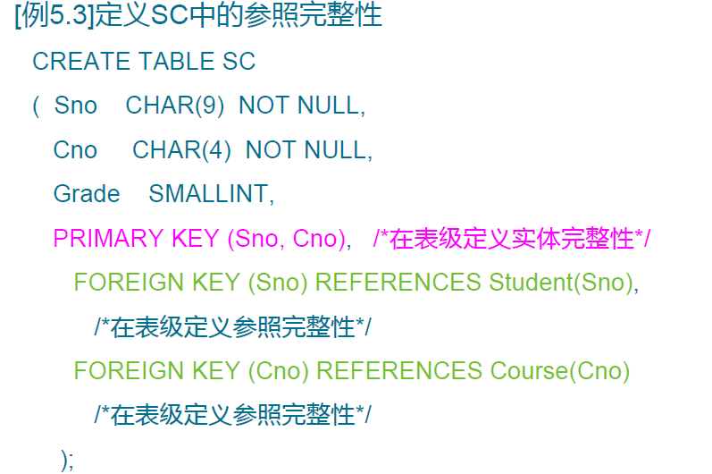
- 参照完整性检查
- 一个参照完整性将两个表中的相应元组联系起来，对被参照表和参照表进行增删改操作时有可能破坏参照完整性，必须进行检查
- 违约处理
- 拒绝执行
- 级联操作
- 设置为空值
- 定义
- 用户定义的完整性
- 定义
- 用户定义的完整性是：针对某一具体应用的数据必须满足的语义要求，包括属性上的和元组上的关系
- 数据库管理系统提供了定义和检验用户定义完整性的机制，不必由应用程序承担
- 完整性约束创建子句
- CONSTRAINT < 完整性约束条件名> <完整性约束条件>
- 完整性约束条件 包括 NOT NULL 、 UNIQUE 、PRIMARY KEY 短语、 FOREIGN KEY 短语、 CHECK 短语等
- 修改完整性约束:使用 ALTER TABLE 语句修改表中的完整性限制，如：ALTER TABLE Student DROP CONSTRAINT C4;
- 定义
2.断言
- 定义
- 用于指定更具有一般性的约束
- 断言创建以后，任何对断言中所涉及的关系的操作都会触发关系数据库管理系统对断言的检查，任何使断言不为真值的操作都会被拒绝执行
- 语法
- 创建断言：CREATE ASSERTION< 断言名 ><CHECK> 子句
- 删除断言：DROP ASSERTION <断言名>
3.触发器
- 定义
- 触发器是用户定义在关系表上的一类由事件驱动的特殊过程
- 触发器保存在数据库服务器中，任何用户对表的增、删、改操作均由服务器自动激活相应的触发器
- 触发器可以实施更为复杂的检查和操作，具有更精细和更强大的数据控制能力
- 语法
- 定义触发器：
- 删除触发器：DROP TRIGGER <触发器名> ON <表名>
- 当特定的系统事件发生时，对规则条件进行检查，如果条件成立则执行规则中的动作，否则不执行该动作
- 触发器类型
- 语句级触发器：只针对一整条SQL语句
- 行级触发器：执行SQL语句过程中每查询一行元组都会检查触发器
- 激活触发器
- 触发器的执行，是由触发事件激活的，并由数据库服务器自动执行
- 一个数据表上可能定义了多个触发器，遵循如下的执行顺序：
- 执行该表上的 BEFORE 触发器
- 激活触发器的 SQL 语句
- 执行该表上的 AFTER 触发器
第六章
1.关系模式及范式
- 关系模式由五部分组成，是一个五元组：(R, U, D, DOM, F)
- 关系名 R 是符号化的元组语义
- U 为一组属性
- D 为属性组 U 中的属性所来自的域
- DOM 为属性到域的映射
- F 为属性组 U 上的一组数据依赖
- 由于D、DOM与模式设计关系不大，因此可以把关系模式看作一个三元组： R<U, F>
- 数据依赖
- 内涵：是一个关系内部属性与属性之间的一种约束关系，现实世界属性间相互联系的抽象，数据内在的性质，语义的体现
- 分类：函数依赖、多值依赖
- 函数依赖
- 普遍存在于现实生活中
- 一个属性可由一个函数被另一个属性唯一确定

- 多值依赖见第五小节
- 范式
- 范式是符合某一种级别的关系模式的集合
- 关系数据库中的关系必须满足一定的要求，满足不同程度要求的为不同范式
- 高等级的范式包含于低等级的，例如2NF ∈ 1NF
- 一个低一级范式的关系模式，通过模式分解可以转换为若干个高一级范式的关系模式的集合，这种过程就叫规范化
2.函数依赖与码
函数依赖
定义
函数依赖不是指关系模式 R 的某个或某些关系实例满足的约束条件，而是指 R 的所有关系实例均要满足的约束条件。
数据库设计者可以对现实世界作强制的规定。例如规定不允许同名人出现，函数依赖“姓名→年龄”成立。所插入的元组必须满足规定的函数依赖，若发现有同名人存在， 则拒绝装入该元组。
平凡函数依赖与非平凡函数依赖
- 如果 X→Y ，但 Y不∈X ，则称 X→Y 是非平凡的函数依赖
- 如果 X→Y ，且Y∈X ，则称 X→Y 是平凡的函数依赖
完全函数依赖与部分函数依赖
传递函数依赖
码
- 若关系模式 R 有多个候选码，则选定其中的一个作为主码
- 主属性与非主属性
- 包含在任何一个候选码中的属性 ，称为主属性
- 不包含在任何码中的属性称为非主属性或非码属性
- 全码：整个属性组是码，称为全码
- 外码：关系模式R中属性或属性组X并非R的码，但X是另一个关系模式的码，则称X是R的外部码或外码
3. 1NF，2NF，3NF
- 1NF
- 如果一个关系模式 R 的所有属性都是不可分的基本数据项，则 R∈1NF 。
- 第一范式是对关系模式的最起码的要求。不满足第一范式的数据库模式不能称为关系数据库。
- 1NF的缺点
- 数据冗余：每一个系主任的姓名重复出现，重复次数与该系所有学生的所有课程成绩出现次数相同。
- 更新异常：某系更换系主任后，必须修改与该系学生有关的每一个元组。
- 插入异常：如果一个系刚成立，尚无学生，则无法把这个系及其系主任的信息存入数据库。
- 删除异常：如果某个系的学生全部毕业了， 则在删除该系学生信息的同时，把这个系及其系主任的信息也丢掉了。
- 解决方案：将其分解为多个关系
- 2NF
- 若关系模式 R∈1NF ，并且每一个非主属性都完全函数依赖于任何一个候选码，则 R∈2NF
- 如果不是2NF，会引发插入异常、删除异常、修改复杂
- 解决方法：将关于候选码完全函数依赖的非主属性和部分函数依赖的非主属性分成两类，分别与它对应的候选码成为一张新表
- 3NF
- 非3NF修改方法：将每个传递依赖的每一环节拆分成新的表
4. BNF
- BCNF
- 定义
- 性质
- 所有非主属性都完全函数依赖于每个候选码
- 所有主属性都完全函数依赖于每个不包含它的候选码
- 没有任何属性完全函数依赖于非码的任何一组属性
- 定义
5. 多值依赖与4NF
- 多值依赖
- 定义
- 平凡与非平凡多值依赖
- 定义
- 多值依赖的对称性
- 按照语义对于 W 的每一个值 Wi，S 有一个完整的集合与之对应而不问C 取何值。所以 W->->S
- 而相对的，对于 W 的每一个值 Wi，C也有一个完整的集合与之对应，它与S对称
- 多值依赖具有对称性，即若X->->Y ，则 X->->Z ，其中 Z=U-X-Y
- 函数依赖是多值依赖的特殊情况。即若 X->Y ，则X->->Y
- 多值依赖在当前属性集的子集上一定成立，但超集不一定
- 4NF
- 定义
- 4NF 就是限制关系模式的属性之间不允许有非平凡且非函数依赖的多值依赖。 4NF 所允许的非平凡多值依赖实际上是函数依赖。
- 定义

第七章
1.数据库设计概述
- 概念
- 数据库设计是指对于一个给定的应用环境，构造（设计）优化的数据库逻辑模式和物理结构，并据此建立数据库及其应用系统，使之能够有效地存储和管理数据，满足各种用户的应用需求，包括信息管理要求和数据操作要求。
- 数据库设计方法
- 手工试凑法
- 规范设计法
- 新奥尔良（ New Orleans ）方法
- 基于 E-R 模型的数据库设计方法
- 3NF （第三范式）的设计方法
- 面向对象的数据库设计方法
- 统一建模语言（ UML ）方法
- 数据库设计阶段
- 需求分析
- 概念结构设计
- 逻辑结构设计
- 物理结构设计
- 数据库实施
- 数据库运行和维护
- 需求分析和概念设计独立于任何数据库管理系统
- 逻辑设计和物理设计与选用的数据库管理系统密切相关
- 参与数据库设计的人员
- 系统分析人员和数据库设计人员
- 数据库管理员和用户代表
- 应用开发人员
2.需求分析
- 需求分析任务
- 详细调查现实世界要处理的对象
- 充分了解原系统（手工系统或计算机系统）工作概况
- 明确用户的各种需求
- 在此基础上确定新系统的功能
- 新系统必须充分考虑今后可能的扩充和改变
- 调查的重点是数据和处理 ，获得用户对数据库的要求
- 信息要求
- 处理要求
- 安全性与完整性要求
- 第一阶段收集的基础数据（用数据字典来表达）是下一步进行概念设计的基础。
- 需求分析方法
- 调查清楚用户的实际需求并进行初步分析
- 与用户达成共识
- 分析与表达这些需求
- 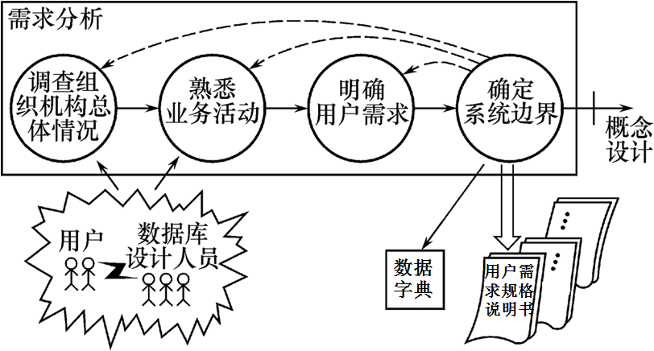
- 数据字典
- 概念
- 数据字典是关于数据库中数据的描述，即元数据，不是数据本身
- 数据字典在需求分析阶段建立，在数据库设计过程中不断修改、充实、完善
- 数据字典是进行详细的数据收集和数据分析所获得的主要结果
- 注意和关系数据库管理系统中数据字典的区别和联系
- 内容
- 数据项、数据结构、数据流、数据存储、处理过程
- 数据项是数据的最小组成单位，若干个数据项可以组成一个数据结构
- 数据字典通过对数据项和数据结构的定义来描述数据流、数据存储的逻辑内容
- 数据项
- 数据结构
- 数据结构反映了数据之间的组合关系
- 一个数据结构可以由若干个数据项组成，也可以由若干个数据结构组成，或由若干个数据项和数据结构混合组成。
- 数据流
- 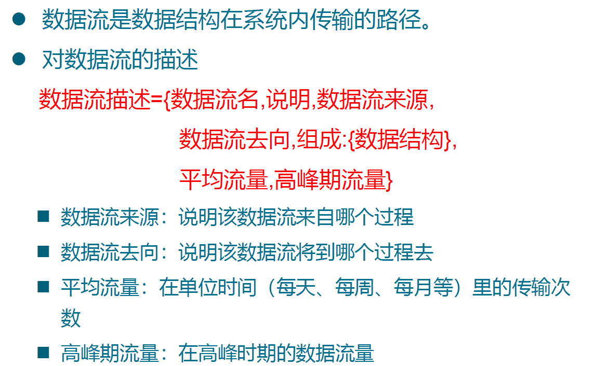
- 数据存储
- 处理过程
- 概念
3.概念模型和E-R模型
概念模型
- 定义：将需求分析得到的用户需求抽象为信息结构（即概念模型）的过程就是概念结构设计
- 描述概念模型的工具：E-R模型
实体型之间的联系
- 两个实体型间联系
- 一对一联系(1 : 1)
- 一对多联系(1 : n)
- 多对多联系(m : n)
- 两个以上的实体型之间的联系
- 一般地，两个以上的实体型之间也存在着一对一、一对多、多对多联系
- 同一个实体集内的各实体之间也可以存在一对一、一对多、多对多的联系
- 两个实体型间联系
E-R模型
- 概念
- 联系的度：参与联系的实体型的数目
- 2 个实体型之间的联系度为 2 ，也称为二元联系
- 3 个实体型之间的联系度为 3 ，称为三元联系
- N 个实体型之间的联系度为 N ，也称为 N 元联系
- 图例
- 实体型：用矩形表示，矩形框内写明实体名
- 属性：用椭圆形表示，并用无向边将其与相应的实体型连接起来
- 联系：用菱形表示，菱形框内写明联系名，并用无向边分别与有关实体型连接起来，同时在无向边旁标上联系的类型（联系可以具有属性）
- 概念
ISA联系
有的实体型是某个实体型的子类型，这种父类-子类联系称为ISA联系

分类属性：分类属性是父实体型的一个属性，它的值把父实体型中的实体分派到子实体型中
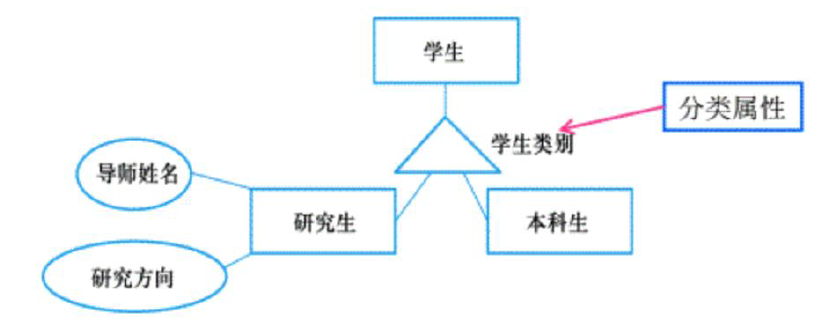不相交约束：描述父类中的一个实体不能同时属于多个子类中的实体集。即一个父类中的实体最多属于一个子类实体集。
描述父类中的一个实体是否必须是某一个子类中的实体。如果是，则叫做完全特化，用父类到子类的双线连接来表示；否则叫做部分特化，用父类到子类的单线连接来表示。
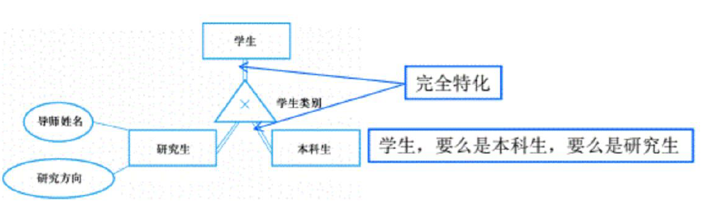
基数约束
- min=1 的约束叫做强制参与约束，即被施加基数约束的实体型中的每个实体都要参与联系
- min=0 的约束叫做非强制参与约束，被施加基数约束的实体型中的实体可以出现在联系中，也可以不出现在联系
弱实体型和独占联系
- 如果一个实体型的存在依赖于其它实体型的存在，则这个实体型叫做弱实体型否则叫做强实体型。
- 用弱实体类型和识别联系来表示独占联系双矩形表示弱实体型，用双菱型表示识别联系。
Part-of 联系
- 描述某个实体型是另外一个实体型的一部分
- 非独占的Part-of联系，简称非独占联系：整体实体如果被破坏，另一部分实体仍然可以独立存在
- 独占的Part-of联系，简称独占联系：整体实体如果被破坏，另一部分实体不可以独立存在
- 用非强制参与联系表示非独占的 Part of 联系
- 用弱实体类型和识别联系来表示独占联系编号编号
4.概念结构设计
方法
- 自顶向下：首先定义全局概念结构的框架，然后逐步细化
- 自底向上：首先定义各局部应用的概念结构，然后将它们集成起来，得到全局概念结构
- 逐步扩张：首先定义最重要的核心概念结构，然后向外扩充，以滚雪球的方式逐步生成其他概念结构，直至总体概念结构
- 混合策略：将自顶向下和自底向上相结合，用自顶向下策略设计一个全局概念结构的框架，以它为骨架集成由自底向上策略中设计的各局部概念结构
- 自顶向下地进行需求分析
- 自底向上地设计概念结构
概念结构设计的步骤
实体与属性的划分
- 为了简化E-R图的处置，现实世界的事物能作为属性对待的，尽量作为属性对待
- 两条准则：
- 作为属性，不能再具有需要描述的性质。属性必须是不可分的数据项，不能包含其他属性。
- 属性不能与其他实体具有联系，即E-R图中所表示的联系是实体之间的联系。

E-R图的集成
步骤
- 合并。解决各分E-R 图之间的冲突，将分E-R图合并起来生成初步E-R图。
- 修改和重构。消除不必要的冗余，生成基本E-R图。
子系统E-R图之间的冲突主要有三类：属性冲突、命名冲突、结构冲突
属性冲突
- 属性域冲突，即属性值的类型、取值范围或取值集合不同
- 属性取值单位冲突
命名冲突
- 同名异义，即不同意义的对象在不同的局部应用中具有相同的名字
- 异名同义（一义多名），即同一意义的对象在不同的局部应用中具有不同的名字
结构冲突
第二步：消除不必要的冗余，设计基本E-R图
- 所谓冗余的数据是指可由基本数据导出的数据，冗余的联系是指可由其他联系导出的联系。
- 消除冗余主要采用分析方法，即以数据字典和数据流图为依据，根据数据字典中关于数据项之间逻辑关系的说明来消除冗余。
5.逻辑结构设计
- 概念
- 任务：把概念结构设计阶段设计好的基本E-R图转换为与选用数据库管理系统产品所支持的数据模型相符合的逻辑结构
- 内容：
- E-R图由实体型、实体的属性和实体型之间的联系三个要素组成
- 关系模型的逻辑结构是一组关系模式的集合
- 将E-R图转换为关系模型：将实体型、实体的属性和实体型之间的联系转化为关系模式
- 实体型
- 一个实体型转换为一个关系模式
- 关系的属性：实体的属性
- 关系的码：实体的码
- 1:1联系
- 一个 1:1 联系可以转换为一个独立的关系模式，也可以与任意一端对应的关系模式合并。
- 转换为一个独立的关系模式：
- 关系的属性：与该联系相连的各实体的码以及联系本身的属性
- 关系的候选码：每个实体的码均是该关系的候选码
- 与某一端实体对应的关系模式合并
- 合并后关系的属性：加入对应关系的码和联系本身的属性
- 合并后关系的码：不变
- 1:n联系
- 一个 1:n 联系可以转换为一个独立的关系模式，也可以与n端对应的关系模式合并。
- 转换为一个独立的关系模式
- 关系的属性：与该联系相连的各实体的码以及联系本身的属性
- 关系的码：n端实体的码
- 与n端对应的关系模式合并
- 合并后关系的属性：在n端关系中加入1端关系的码和联系本身的属性
- 合并后关系的码：不变
- 可以减少系统中的关系个数
- m:n联系
- 一个 m:n 联系转换为一个关系模式
- 关系的属性：与该联系相连的各实体的码以及联系本身的属性
- 关系的码：各实体码的组合
- 多元联系
- 三个或三个以上实体间的一个多元联系转换为一个关系模式。
- 关系的属性：与该多元联系相连的各实体的码以及联系本身的属性
- 关系的码：各实体码的组合
- 关系模式的合并
- 具有相同码的关系模式可合并
- 目的：减少系统中的关系个数
- 合并方法：
- 将其中一个关系模式的全部属性加入到另一个关系模式中
- 然后去掉其中的同义属性（可能同名也可能不同名）
- 适当调整属性的次序
- E-R图的转换
- 数据模型的优化
- 得到初步数据模型后，还应该适当地修改、调整数据模型的结构，以进一步提高数据库应用系统的性能，这就是数据模型的优化。
- 关系数据模型的优化通常以规范化理论为指导
- 并不是规范化程度越高的关系就越优：当查询经常涉及两个或多个关系模式的属性时，系统必须经常地进行连接运算，而连接运算代价高，因此在这种情况下，第二范式甚至第一范式也许是适合的。对于一个具体应用来说，到底规范化进行到什么程度，需要权衡响应时间和潜在问题两者的利弊才能决定
- 关系模式的分解
- 水平分解
- 把基本关系的元组分为若干子集合，定义每个子集合为一个子关系，以提高系统的效率。
- 对符合80/20原则 的，把经常被使用的数据（约20%）水平分解出来，形成一个子关系。
- 垂直分解
- 把关系模式 R 的属性分解为若干子集合，形成若干子关系模式。
- 垂直分解的原则：经常在一起使用的属性从 R 中分解出来形成一个子关系模式
- 垂直分解的适用范围：取决于分解后 R 上的所有事务的总效率是否得到了提高
- 水平分解
- 设计用户子模式
- 定义用户外模式时应该更注重考虑用户的习惯与方便。包括三个方面：
- 使用更符合用户习惯的别名
- 针对不同级别的用户定义不同的视图，以保证系统的安全性
- 简化用户对系统的使用
- 定义用户外模式时应该更注重考虑用户的习惯与方便。包括三个方面：
6.物理结构设计
- 设计步骤
- 确定数据库的物理结构，在关系数据库中主要指存取方法和存储结构
- 对物理结构进行评价，评价的重点是时间和空间效率
- 若评价结果满足原设计要求，则可进入到物理实施阶段。否则，就需要重新设计或修改物理结构，有时甚至要返回逻辑设计阶段修改数据模型。
- 设计内容
- 为关系模式选择存取方法
- 设计关系、索引等数据库文件的物理存储结构
- 数据库管理系统常用存取方法
- B+ 树索引存取方法
- Hash 索引存取方法
- 聚簇存取方法
- B+树索引存取方法
- 选择索引存取方法的一般规则
- 如果一个（组）属性经常在查询条件中出现，则考虑在这个（组）属性上建立索引（或组合索引）
- 如果一个属性经常作为最大值和最小值等聚集函数的参数，则考虑在这个属性上建立索引
- 如果一个（组）属性经常在连接操作的连接条件中出现，则考虑在这个（组）属性上建立索引
- 关系上定义的索引数过多会带来较多的额外开销（维护、查找）
- 选择索引存取方法的一般规则
- Hash 存取方法
- 如果一个关系的属性主要出现在等值连接条件中或主要出现在等值比较选择条件中，而且满足下列两个条件之一
- 该关系的大小可预知，而且不变
- 该关系的大小动态改变，但所选用的数据库管理系统提供了动态 Hash存取方法
- 如果一个关系的属性主要出现在等值连接条件中或主要出现在等值比较选择条件中，而且满足下列两个条件之一
- 聚簇
- 定义：为了提高某个属性（或属性组）的查询速度，把这个或这些属性（称为聚簇码）上具有相同值的元组集中存放在连续的物理块中称为聚簇。
- 聚簇的用途：大大提高按聚簇属性进行查询的效率
- 聚簇存储方法的选择
- 选择聚簇存储方法，即确定需要建立多少个聚簇，每个聚簇中包含哪些关系
- 一个数据库可以建立多个聚簇，一个关系只能加入一个聚簇。
- 聚簇的局限性
- 聚簇只能提高某些特定应用的性能
- 建立与维护聚簇的开销相当大
- 当通过聚簇码进行访问或连接是该关系的主要应用，与聚簇码无关的其他访问很少或者是次要的时可以使用聚簇
- 确定数据库的存储结构
- 确定数据库物理结构主要指确定数据的存放位置和存储结构，包括：确定关系、索引、聚簇、日志、备份等的存储安排和存储结构，确定系统配置等
- 确定数据的存放位置基本原则：根据应用情况将易变部分与稳定部分分开存放，经常存取部分与存取频率较低部分分开存放
- 确定系统配置
第八章
1. 数据库的实施和维护
- 数据的载入和应用程序的调试
- 数据库结构建立好后，就可以向数据库中装载数据了。组织数据入库是数据库实施阶段最主要的工作。
- 数据装载方法：人工方法、计算机辅助数据入库
- 在组织数据入库的同时还要调试应用程序
- 数据库的试运行
- 应用程序调试完成，并且已有一小部分数据入库后，就可以开始对数据库系统进行联合调试，也称数据库的试运行。
- 主要工作：功能测试、性能测试
- 数据库的试运行的注意事项：
- 数据的分期入库
- 数据库的转储和恢复
- 数据库的运行和维护
- 数据库的转储和恢复
- 数据库的安全性、完整性控制
- 数据库性能的监督、分析和改进
- 数据库的重组织与重构造
- 数据库的转储和恢复
- 数据库管理员要针对不同的应用要求制定不同的转储计划，定期对数据库和日志文件进行备份。
- 一旦发生故障，即利用数据库备份及日志文件备份，尽快将数据库恢复到某种一致性状态。并尽可能减少对数据库的破坏。
- 数据库的安全性、完整性控制
- 初始定义：数据库管理员根据用户的实际需要授予不同的操作权限，根据应用环境定义不同的完整性约束条件
- 修改定义：当应用环境发生变化，对安全性的要求也会发生变化，数据库管理员需要根据实际情况修改原有的安全性控制；由于应用环境发生变化，数据库的完整性约束条件也会变化，也需要数据库管理员不断修正，以满足用户要求
- 数据库性能的监督、分析和改进
- 在数据库运行过程中，数据库管理员必须监督系统运行，对监测数据进行分析，找出改进性能的方法。
- 利用监测工具获取系统运行过程中一系列性能参数的值
- 通过仔细分析这些数据，判断当前系统是否处于最佳运行状态
- 如果不是，则需要调整参数或对数据库进行重组织或重构造
- 数据库的重组织
- 原因：数据库运行一段时间后，由于记录的不断增、删、改，会使数据库的物理存储变坏，从而降低数据库存储空间的利用率和数据的存取效率，使数据库的性能下降。
- 重组织的形式：全部重组织、部分重组织（只对频繁增删的表）
- 重组织的工作：重新安排存储位置、回收垃圾、减少指针链
- 数据库的重构造
- 原因：数据库应用环境发生变化，会导致实体及实体间的联系也发生相应的变化，使原有的数据库设计不能很好地满足新的需求
- 重构造的主要工作：根据新环境调整数据库的模式和内模式
- 增加或删除某些数据项
- 改变数据项的类型
- 增加或删除某个表
- 改变数据库的容量
- 增加或删除某些索引
- 重构造数据库的程度是有限的，若变化太大或重构代价太高，则需要重新设计新数据库
2. 面向驱动的数据库编程
- 考试不考，见PPT
3. 过程化SQL
- 概念
- SQL的扩展
- 增加了过程化语句功能
- 基本结构是块
- 过程化SQL的块结构
- 定义
- 执行部分
- 定义
- 变量和常量的定义
- 流程控制
- 条件控制
- 循环控制
- 如果过程化SQL在执行时出现异常，则应该让程序在产生异常的语句处停下来，根据异常的类型去执行异常处理语句
- 条件控制
4. 存储过程和函数
- 过程化SQL块类型
- 命名块：编译后保存在数据库中，可以被反复调用，运行速度较快，过程和函数是命名块
- 匿名块：每次执行时都要进行编译，它不能被存储到数据库中，也不能在其他过程化SQL块中调用
- 存储过程
- 定义：由过程化SQL语句书写的过程，经编译和优化后存储在数据库服务器中，使用时只需要调用
- 优点：运行效率高，降低了客户机与服务器的通信量，方便实施企业规则
- 存储过程的用户接口
- 创建存储过程
- 执行存储过程
- 修改和删除
- 创建存储过程
- 函数
5. 事务
- 概念
- 事务(Transaction)是用户定义的一个数据库操作序列，这些操作要么全做，要么全不做，是一个不可分割的工作单位。
- 事务是恢复和并发控制的基本单位
- 定义事务
- 隐式方式：当用户没有显式地定义事务时，数据库管理系统按缺省规定自动划分事务
- 事务的ACID特性
- 原子性
- 事务是数据库的逻辑工作单位
- 事务中包括的诸操作要么都做，要么都不做
- 一致性
- 事务执行的结果必须是使数据库从一个一致性状态变到另一个一致性状态
- 一致性状态：数据库中只包含成功事务提交的结果
- 隔离性
- 一个事务的执行不能被其他事务干扰
- 一个事务内部的操作及使用的数据对其他并发事务是隔离的
- 并发执行的各个事务之间不能互相干扰
- 持续性（永久性）
- 一个事务一旦提交，它对数据库中数据的改变就应该是永久性的
- 接下来的其他操作或故障不应该对其执行结果有任何影响
- 保证事务ACID特性是事务处理的任务
- 破坏事务ACID特性的因素
- 多个事务并行运行时，不同事务的操作交叉执行
- 事务在运行过程中被强行停止
- 原子性
第九章
1. 故障和数据库恢复
- 故障
- 分类
- 事务内部的故障
- 系统故障
- 介质故障
- 计算机病毒
- 各类故障，对数据库的影响有两种可能性：
- 一是数据库本身被破坏
- 二是数据库没有被破坏，但数据可能不正确，这是由于事务的运行被非正常终止造成的。
- 分类
- 事务故障
- 分类
- 运算溢出
- 并发事务发生死锁而被选中撤销该事务
- 违反了某些完整性限制而被终止等
- 事务故障仅指这类非预期的故障
- 事务故障意味着：
- 事务没有达到预期的终点 (COMMIT 或者显式的ROLLBACK)
- 数据库可能处于不正确状态。
- 事务故障的恢复：事务撤消
- 强行回滚（ ROLLBACK ）该事务
- 撤销该事务已经作出的任何对数据库的修改，使得该事务象根本没有启动一样
- 分类
- 系统故障
- 系统故障，称为软故障，是指造成系统停止运转的任何事件（特定类型的硬件错误（如 CPU 故障）、操作系统故障、数据库管理系统代码错误、系统断电），使得系统要重新启动。
- 发生系统故障时，一些尚未完成的事务的结果可能已送入物理数据库，造成数据库可能处于不正确状态。
- 恢复策略：系统重新启动时，恢复程序让所有非正常终止的事务回滚，强行撤消（ UNDO ）所有未完成事务
- 发生系统故障时，有些已完成的事务可能有一部分甚至全部留在缓冲区，尚未写回到磁盘上的物理数据库中，系统故障使得这些事务对数据库的修改部分或全部丢失
- 恢复策略：系统重新启动时，恢复程序需要重做所有已提交的事务
- 介质故障
- 介质故障，称为硬故障，指外存故障
- 介质故障破坏数据库或部分数据库，并影响正在存取这部分数据的所有事务
- 计算机病毒
- 一种人为的故障或破坏，是一些恶作剧者研制的一种计算机程序
- 数据库一旦被破坏仍要用恢复技术把数据库加以恢复
- 恢复
2. 数据转储和日志文件
- 数据转储
- 转储是指数据库管理员定期地将整个数据库复制到磁带、磁盘或其他存储介质上保存起来的过程
- 备用的数据文本称为后备副本（后援副本）
- 数据库遭到破坏后可以将后备副本重新装入
- 重装后备副本只能将数据库恢复到转储时的状态
- 要想恢复到故障发生时的状态，必须重新运行自转储以后的所有更新事务
- 转储方法
- 静态转储
- 在系统中无运行事务时进行的转储操作
- 转储期间不允许对数据库的任何存取、修改活动
- 优点：实现简单
- 缺点：降低了数据库的可用性
- 动态转储
- 转储操作与用户事务并发进行
- 转储期间允许对数据库进行存取或修改
- 利用动态转储得到的副本进行故障恢复：需要把动态转储期间各事务对数据库的修改活动登记下来，建立日志文件，后备副本加上日志文件就能把数据库恢复到某一时刻的正确状态
- 海量转储：每次转储全部数据库
- 增量转储 : 只转储上次转储后更新过的数据
- 静态转储
- 日志文件
- 日志文件是用来记录事务对数据库的更新操作的文件
- 日志文件的格式：
- 以记录为单位的日志文件
- 以数据块为单位的日志文件
- 以记录为单位的日志文件内容
- 各个事务的开始标记 (BEGIN）
- 各个事务的结束标记 (COMMIT 或 ROLLBACK)
- 各个事务的所有更新操作
- 以记录为单位的日志文件，每条日志记录的内容
- 事务标识（标明是哪个事务）
- 操作类型（插入、删除或修改）
- 操作对象（记录内部标识）
- 更新前数据的旧值（对插入操作而言，此项为空值）
- 更新后数据的新值（对删除操作而言 , 此项为空值）
- 以数据块为单位的日志文件，每条日志记录的内容
- 事务标识
- 被更新的数据块
- 日志文件的作用
- 登记日志文件原则
- 登记的次序严格按并发事务执行的时间次序
- 必须先写日志文件，后写数据库
3. 恢复策略
事务故障的恢复
- 恢复方法：由恢复子系统利用日志文件撤消此事务已对数据库进行的修改
- 事务故障的恢复由系统自动完成，对用户是透明的，不需要用户干预
- 步骤
- 反向扫描文件日志(即从最后向前扫描日志文件)，查找该事务的更新操作。
- 对该事务的更新操作执行逆操作。即将日志记录中更新前的值写入数据库。
- 重复前两步，直至读到此事务的开始标记，事务故障恢复就完成了。
系统故障的恢复
- 恢复方法
- Undo 故障发生时未完成的事务（反向扫描日志）
- Redo 已完成的事务（正向扫描日志）
- 系统故障的恢复由系统在重新启动时自动完成，不需要用户干预
- 恢复方法
介质故障的恢复
介质故障的恢复的工作
- 重装数据库
- 重做已完成的事务
介质故障的恢复需要数据库管理员介入，但具体的恢复操作仍由数据库管理系统完成
数据库管理员的工作
- 重装最近转储的数据库副本和有关的各日志文件副本
- 执行系统提供的恢复命令
4. 具有检查点的恢复步骤
- 概念
- 恢复的两个问题：
- 搜索整个日志将耗费大量的时间
- 重做处理：重新执行，浪费了大量时间
- 具有检查点的恢复技术
- 在日志文件中增加检查点记录(checkpoint)
- 增加重新开始文件
- 恢复子系统在登录日志文件期间动态地维护日志
- 检查点记录的内容
- 建立检查点时刻所有正在执行的事务清单
- 这些事务最近一个日志记录的地址
- 重新开始文件的内容：记录各个检查点记录在日志文件中的地址
- 恢复的两个问题：
- 动态维护日志文件的方法
- 周期性地执行如下操作：建立检查点，保存数据库状态。
- 建立检查点
- 恢复子系统可以定期或不定期地建立检查点，保存数据库状态
- 定期：按照预定的一个时间间隔，如每隔一小时建立一个检查点
- 不定期：按照某种规则，如日志文件已写满一半建立一个检查点
- 利用检查点的恢复策略
- 使用检查点方法可以改善恢复效率
- 当事务T在一个检查点之前提交， T对数据库所做的修改已写入数据库
- 写入时间是在这个检查点建立之前或在这个检查点建立之时
- 在进行恢复处理时，没有必要对事务T执行重做操作
- 恢复步骤
- 从重新开始文件中找到最后一个检查点记录在日志文件中的地址，由该地址在日志文件中找到最后一个检查点记录
- 由该检查点记录得到检查点建立时刻所有正在执行的事务清单(ACTIVE LIST)
- 从检查点开始正向扫描日志文件，直到日志文件结束
- 对UNDO LIST中的每个事务执行UNDO操作；对REDO LIST中的每个事务执行REDO操作
- 使用检查点方法可以改善恢复效率
5. 数据库镜像
- 概念
- 数据库管理系统自动把整个数据库或其中的关键数据复制到另一个磁盘上
- 数据库管理系统自动保证镜像数据与主数据的一致性
- 每当主数据库更新时，数据库管理系统自动把更新后的数据复制过去
- 在实际应用中用户往往只选择对关键数据和日志文件镜像
- 用途
- 出现介质故障时
- 可由镜像磁盘继续提供使用
- 同时数据库管理系统自动利用镜像磁盘数据进行数据库的恢复
- 不需要关闭系统和重装数据库副本
- 没有出现故障时
- 可用于并发操作
- 一个用户对数据加排他锁修改数据，其他用户可以读镜像数据库上的数据，而不必等待该用户释放锁
- 出现介质故障时
第十章
1. 并发控制
- 事务并发
- 多用户数据库系统，允许多个用户同时使用的数据库系统
- 特点：在同一时刻并发运行的事务数可达数百上千个
- 事务并发执行带来的问题
- 会产生多个事务同时存取同一数据的情况
- 可能会存取和存储不正确的数据，破坏事务隔离性和数据库的一致性
- 数据库管理系统必须提供并发控制机制，并发控制机制是衡量一个数据库管理系统性能的重要标志之一
- 多事务执行方式
- 串行执行
- 每个时刻只有一个事务运行，其他事务必须等到这个事务结束以后方能运行
- 不能充分利用系统资源，发挥数据库共享资源的特点
- 交叉并发
- 在单处理机系统中，事务的并行执行是这些并行事务的并行操作轮流交叉运行
- 单处理机系统中的并行事务并没有真正地并行运行，但能够减少处理机的空闲时间，提高系统的效率
- 同时并发
- 多处理机系统中，每个处理机可以运行一个事务，多个处理机可以同时运行多个事务，实现多个事务真正的并行运行
- 最理想的并发方式，但受制于硬件环境
- 更复杂的并发方式机制
- 串行执行
- 并发控制
- 事务是并发控制的基本单位
- 并发控制机制的任务
- 对并发操作进行正确调度
- 保证事务的隔离性
- 保证数据库的一致性
- 并发操作带来的数据不一致性
- 丢失修改
- 不可重复读
- 读脏数据
- 丢失修改
- 两个事务 T1 和 T2 读入同一数据并修改， T2的提交结果破坏了 T1提交的结果，导致 T1的修改被丢失
- 不可重复读
- 不可重复读是指事务 T1 读取数据后，事务 T2 执行更新操作，使T1 无法再现前一次读取结果

- 读脏数据
- 概念
- 事务 T1 修改某一数据，并将其写回磁盘
- 事务 T2 读取同一数据后， T1 由于某种原因被撤销
- 这时 T1 已修改过的数据恢复原值， T2 读到的数据就与数据库中的数据不一致
- T2 读到的数据就为 脏 数据，即不正确的数据
- 概念
- 并发控制方式
- 封锁
- 时间戳
- 乐观控制法
- 多版本并发控制
2. 封锁
- 概念
- 封锁就是事务T在对某个数据对象（例如表、记录等）操作之前，先向系统发出请求，对其加锁
- 加锁后事务T就对该数据对象有了一定的控制，在事务T释放它的锁之前，其它的事务不能更新此数据对象
- 基本封锁类型
- 排它锁/写锁（简记为X锁或W锁）
- 共享锁/读锁（简记为S锁或R锁）
- 排他锁与共享锁
- 若事务T对数据对象A加上X锁，则只允许T读取和修改A，其它任何事务都不能再对A加任何类型的锁，直到T释放A上的锁
- 若事务T对数据对象A加上S锁，则事务T可以读A但不能修改A，其它事务只能再对A加S锁，而不能加X锁，直到 T 释放A上的S锁
- 封锁协议
- 在运用 X 锁和 S 锁对数据对象加锁时，需要约定一些规则，这些规则为封锁协议
- 何时申请 X 锁或 S 锁
- 持锁时间
- 何时释放
- 一级封锁协议
- 事务 T 在修改数据 R 之前必须先对其加 X 锁，直到事务结束才释放
- 一级封锁协议可防止丢失修改，并保证事务 T 是可恢复的。
- 在一级封锁协议中，如果仅仅是读数据不对其进行修改，是不需要加锁的，所以它不能保证可重复读和不读脏数据。
- 二级封锁协议
- 一级封锁协议加上事务 T 在读取数据 R 之前必须先对其加 S 锁，读完后即可释放 S 锁
- 二级封锁协议可以防止丢失修改和读脏数据
- 在二级封锁协议中，由于读完数据后即可释放 S 锁，所以它不能保证可重复读
- 三级封锁协议
- 一级封锁协议加上事务 T 在读取数据 R 之前必须先对其加 S 锁，直到事务结束才释放。
- 三级封锁协议可防止丢失修改、读脏数据和不可重复读。
- 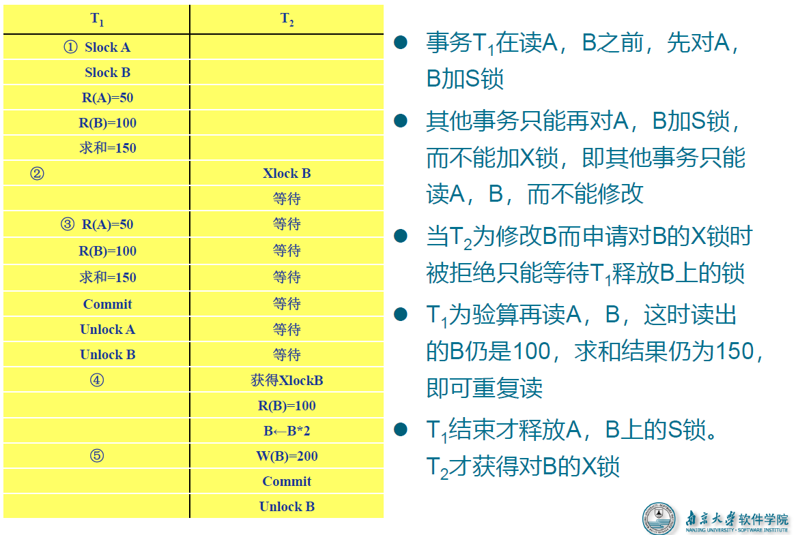
- 在运用 X 锁和 S 锁对数据对象加锁时，需要约定一些规则，这些规则为封锁协议
- 活锁与死锁
- 活锁
- 避免活锁：采用先来先服务的策略
- 死锁
- 简单来说就是等待形成闭环
- 死锁的预防
- 一次封锁法：要求每个事务必须一次将所有要使用的数据全部加锁，否则就不能继续执行
- 顺序封锁法，预先对数据对象规定一个封锁顺序，所有事务都按这个顺序实行封锁。
- 死锁的诊断
- 超时法：如果一个事务的等待时间超过了规定的时限，就认为发生了死锁
- 等待图法， 并发控制子系统周期性地（比如每隔数秒）生成事务等待图，检测事务。如果发现图中存在回路，则表示系统中出现了死锁。
- 死锁的解除
- 选择一个处理死锁代价最小的事务，将其撤消
- 释放此事务持有的所有的锁，使其它事务能继续运行下去
- 活锁
3. 事务调度
并发调度的可串行性
- 概念：执行结果等价于串行调度的调度是正确的，称为可串行化调度
- 多个事务的并发执行是正确的，当且仅当其结果与按某一次序串行地执行这些事务时的结果相同
- 一个给定的并发调度，当且仅当它是可串行化的，才认为是正确调度
冲突可串行化
- 冲突操作：是指不同的事务对同一数据的读写操作和写写操作
- 其他操作是不冲突操作
- 不能交换的动作
- 同一事务的两个操作
- 不同事务的冲突操作
- 冲突可串行化调度是可串行化调度的充分条件，不是必要条件。还有不满足冲突可串行化条件的可串行化调度。
两段锁协议
- 概念：所有事务必须分两个阶段对数据项加锁和解锁
- 在对任何数据进行读、写操作之前，事务首先要获得对该数据的封锁
- 在释放一个封锁之后，事务不再申请和获得任何其他封锁
- 两段锁协议中事务分为两个阶段：第一阶段是获得封锁，也称为扩展阶段，事务可以申请获得任何数据项上的任何类型的锁，但是不能释放任何锁；第二阶段是释放封锁，也称为收缩阶段，事务可以释放任何数据项上的任何类型的锁，但是不能再申请任何锁
- 事务遵守两段锁协议是可串行化调度的充分条件，而不是必要条件。
4. 封锁粒度
封锁粒度
- 封锁对象的大小称为封锁粒度
- 封锁的对象：逻辑单元，物理单元
- 逻辑单元 : 属性值、属性值的集合、元组、关系、索引项、整个索引、整个数据库等
- 物理单元：页（数据页或索引页）、物理记录等
- 封锁粒度与系统的并发度和并发控制的开销密切相关
- 封锁的粒度越大，数据库所能够封锁的数据单元就越少，并发度就越小，系统开销也越小；
- 封锁的粒度越小，并发度较高，但系统开销也就越大
- 多粒度封锁：在一个系统中同时支持多种封锁粒度供不同的事务选择
- 需要处理多个关系的大量元组的用户事务：以数据库为封锁单位
- 需要处理大量元组的用户事务：以关系为封锁单元
- 只处理少量元组的用户事务：以元组为封锁单位
多粒度树
- 以树形结构来表示多级封锁粒度
- 根结点是整个数据库，表示最大的数据粒度
- 叶结点表示最小的数据粒度
多粒度封锁协议
- 允许多粒度树中的每个结点被独立地加锁
- 对一个结点加锁意味着这个结点的所有后裔结点也被加以同样类型的锁
- 在多粒度封锁中一个数据对象可能以两种方式封锁：
- 显式封锁 : 直接加到数据对象上的封锁
- 隐式封锁 是该数据对象没有独立加锁，是由于其上级结点加锁而使该数据对象加上了锁
- 系统检查封锁冲突时，既要检查显式封锁，还要检查隐式封锁
- 对某个数据对象加锁，系统要检查：
- 该数据对象有无显式封锁与之冲突
- 所有上级结点：检查本事务的显式封锁是否与该数据对象上的隐式封锁冲突
- 所有下级结点：看上面的显式封锁是否与本事务的隐式封锁
意向锁
- 如果对一个结点加意向锁，则说明该结点的下层结点正在被加锁
- 对任一结点加基本锁，必须先对它的上层结点加意向锁
- 例如，对任一元组加锁时，必须先对它所在的数据库和关系加意向锁
常用意向锁
具有意向锁的多粒度封锁方法
- 申请封锁时应该按自上而下的次序进行
- 释放封锁时则应该按自下而上的次序进行
5. 查询处理
- 查询分析
- 查询分析的任务：对查询语句进行扫描、词法分析和语法分析
- 词法分析：从查询语句中识别出正确的语言符号
- 语法分析：进行语法检查
- 查询检查
- 根据数据字典中有关的模式定义检查语句中的数据库对象，如关系名、属性名是否存在和有效
- 如果是对视图的操作，则要用视图消解方法把对视图的操作转换成对基本表的操作
- 根据数据字典中的用户权限和完整性约束定义对用户的存取权限进行检查
- 检查通过后把 SQL 查询语句转换成内部表示，即等价的关系代数表达式。
- 查询优化
- 查询优化：选择一个高效执行的查询处理策略
- 查询优化分类
- 代数优化/逻辑优化：指关系代数表达式的优化
- 物理优化：指存取路径和底层操作算法的选择
- 查询优化的选择依据
- 基于规则
- 基于代价
- 基于语义
- 查询执行
- 依据优化器得到的执行策略生成查询执行计划
- 两种执行方法
- 自顶向下
- 自底向上
- 各种操作的实现
- 选择操作
- 全表扫描方法（适合小表）：对查询的基本表顺序扫描，逐一检查每个元组是否满足选择条件，把满足条件的元组作为结果输出
- 索引扫描方法(适合于选择条件中的属性上有索引，例如B+树索引或Hash索引)：通过索引先找到满足条件的元组主码或元组指针，再通过元组指针直接在查询的基本表中找到元组
- 连接操作
- 选择操作

6. 查询优化
概述
- 关系查询优化是影响关系数据库管理系统性能的关键因素
- 非关系系统中用户使用过程化的语言表达查询要求，执行何种记录级的操作，以及操作的序列是由用户来决定的
- 目标：关系数据库管理系统通过某种代价模型计算出各种查询执行策略的执行代价，然后选取代价最小的执行方案
- 分为代数优化和物理优化
代数优化
- 代数优化策略：通过对关系代数表达式的等价变换来提高查询效率，E1 ≡ E2表示两个表达式等价
- 常用的等价变换规则
- 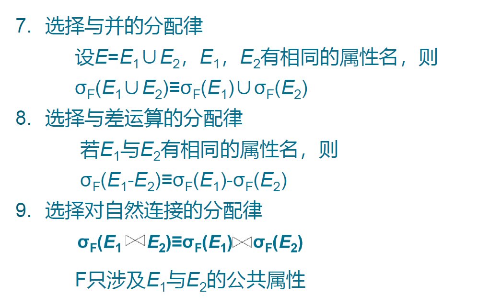
- 典型的启发式规则
- 选择运算应尽可能先做
- 把投影运算和选择运算同时进行
- 把投影同其前或其后的双目运算结合起来
- 把某些选择同在它前面要执行的笛卡尔积结合起来成为一个连接运算
- 找出公共子表达式
- 查询树的启发式优化算法见PPT
物理优化
概述
- 代数优化改变查询语句中操作的次序和组合，不涉及底层的存取路径
- 对于一个查询语句有许多存取方案，它们的执行效率不同， 仅仅进行代数优化是不够的
- 物理优化就是要选择高效合理的操作算法或存取路径，求得优化的查询计划
物理优化方法
- 基于规则的启发式优化
- 基于代价估算的优化
- 两者结合的优化方法
选择操作的启发式规则
对于小关系，使用全表顺序扫描，即使选择列上有索引
对于大关系，启发式规则有：
连接操作的启发式规则
- 如果 2 个表都已经按照连接属性排序：选用排序-合并算法
- 如果一个表在连接属性上有索引：选用索引连接算法
- 如果上面 2 个规则都不适用，其中一个表较小：选用 hash join 算法
- 可以选用嵌套循环方法，并选择其中较小的表，确切地讲是占用的块数 (较少的表，作为外表 外循环的表 )
基于代价估算的优化
- 启发式规则优化是定性的选择，适合解释执行的系统
- 编译执行的系统中查询优化和查询执行是分开的
- 基于代价的优化方法要计算查询的各种不同执行方案的执行代价，它与数据库的状态密切相关

- 代价估算方法